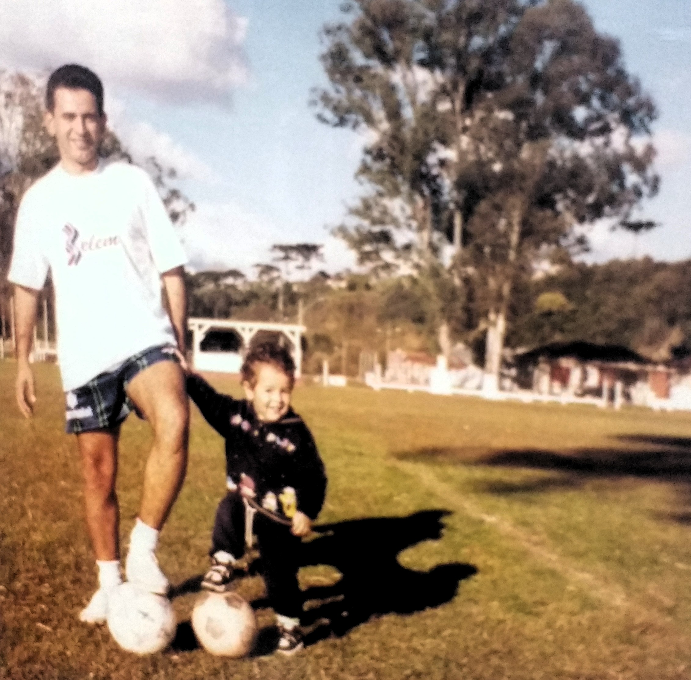
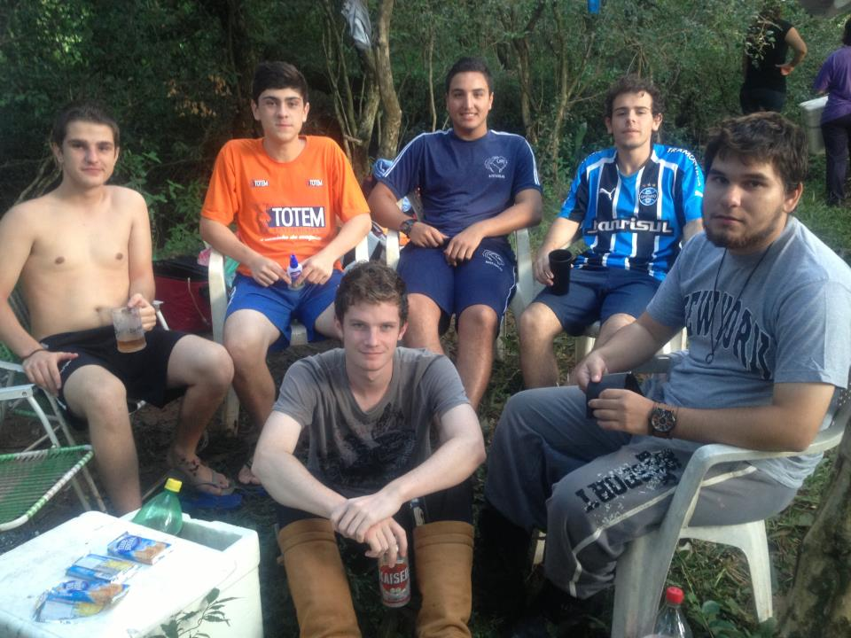

Nascimento
Nasci no dia 19 de Abril do ano de 1996 em Santiago, Rio Grande do Sul. Diz que foi loco já no parto, porque faltou luz no hospital na hora, haha.
Rio Negro
Nem deu tempo de completar 2 meses de vida e já fui parar em Rio Negro, Paraná.
Marabá
Logo com 3 anos de idade já fomos pro Pará (em Marabá, mais especificamente). Vida de militar tem dessas...
Gosto pelo futebol
Desde cedo fui incentivado a gostar de futebol, já que o seu Ricardo sempre jogou.
Voltando pra Santiago

Com 4 anos voltamos pra Santiago. Peguei gosto por andar a cavalo desde cedo também, haha.
Fofo
Pela lembrança do querido Fofo e da primeira casa que morei em Santiago.
Gurizada do mal
Durante esses anos na cidade fiz grandes amigos que levo até hoje.
Ensino Médio
Na finaleira do ensino médio tivemos a oportunidade de conhecer o lugar que estudaria alguns anos depois, a querida UFSM <3
Chegando em Santa Maria
Em 2013 eu e o Vitinho chegamos em Santa. Foi tri massa no início, tanto que conhecemos até o bom velhinho de cara.
Virando bixo =P
Em 2013 ingressei no curso de ECOMP na UFSM e tive a sorte de conhecer muita gente massa. Essa foto mostra grande parte desse pessoal e também representa a união que foi promovida pelos nossos veteranos, sempre muito parceria conosco.
Sendo veterano
No ano seguinte fomos veteranos e procuramos manter toda essa união e parceria com os bixos.
Galatto!!!
Mencionei anteriormente meu amor pelo Grêmio e por futebol. Durante todos esses anos acompanhando o tricolor tive alguns ídolos, e sem dúvidas um dos mais importantes é ele: Galatto! A lenda da batalha dos aflitos.
GP É TOP!
Seguindo a caminhada tive a oportunidade de me tornar trainee na CompactJr. Essa foto é da imersão que rolou, muito tri por sinal. GP é top!
Dona Silvia
Pra finalizar tinha que ter a mulher +foda da minha vida: Dona Silvia, vulgo mãe haha. Se não fosse ela com certeza não estaria fazendo esse site... Me ensinou os valores que fazem um homem de verdade. Valeu mãe, te amo <3